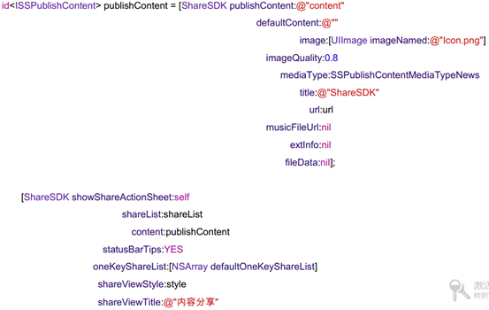
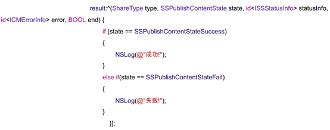
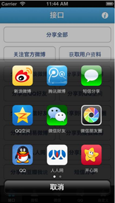
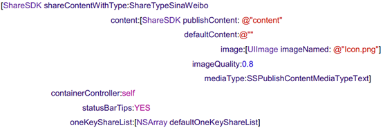
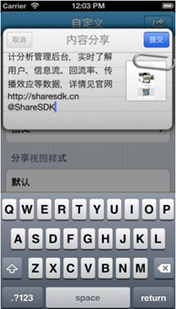
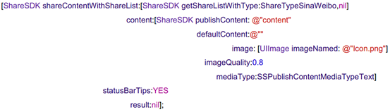
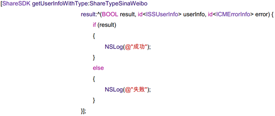
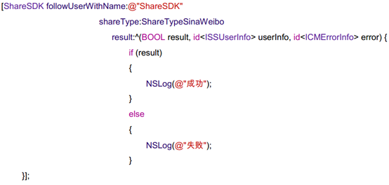
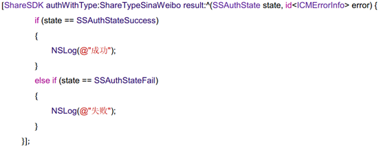

概述
成功的应用应该能够让用户轻松地与其家人和朋友即时共享他们的活动。能够让用户轻松共享内容的应用往往会获得更多的关注，从而鼓励用户更频繁地使用这些应用。Windows phone、windows 8、Android都提供了相应的机制来实现该功能，可以帮助你将用户与他们所关心的人和最常使用的应用连接起来。IOS一般使用ShareSDK实现分享功能。ShareSDK是一个第三方类库，不仅可以应用与IOS，同样可以应用在Android。
应用可以通过两种方式来实现共享特性。首先，应用作为可以为用户提供要共享的内容源应用。其次，应用可以是用户选择作为共享内容目标的目标应用。一个应用也可以既是源应用，也是目标应用。
被分享的内容的格式可以是多种类型，常见的有文本、图片、链接等。
不同平台横向比较
由于IOS使用第三方类库ShareSDK实现分享，如下表格对android、win8和Windowsphone8平台分享文本、图片和链接内容的实现方式进行比较：
|
|
Android |
Win8 |
Windows phone 8 |
|
文本 |
Intent.setType(text/plain) |
DataPackage.setText |
ShareStatusTask |
|
图片 |
Intent.setType(image/jpeg) |
DataPackage.setBitmap |
ShowShareMediaTask |
|
链接 |
Intent.setType(text/plain) |
DataPackage.setUri |
ShareLinkTask |
以下分别介绍Windows phone、windows 8、Android平台下不同内容的分享方式。本文最后介绍了ShareSDK在IOS中的使用方法。
共享文本内容
Windows phone
使用共享状态任务可使用户能够在其所的社交网络上共享状态消息。使用启动器，可以帮助您在 Windows Phone 平台中提供一致的用户体验
首先引入以下命名空间：
using Microsoft.Phone.Tasks;然后，在应用程序中的所需位置添加以下代码，例如按键点击事件中。为了测试此过程，可以将该代码放置在页面构造函数中。以下是启动任务的代码：
ShareStatusTask shareStatusTask = new ShareStatusTask();
shareStatusTask.Status = "I'm developing a Windows Phone application!";
shareStatusTask.Show();详请参见如何使用 Windows Phone 的共享状态任务
Windows 8
共享文本是最基本、也是最必要的内容共享方法。除了纯文本消息（如状态更新）之外，我们还建议你的应用在下列情况中支持文本共享：当你希望内容可由大量目标应用使用时、在共享链接或共享 HTML 时作为辅助源。
可按以下步骤实现文本共享：
添加 DataTransfer 命名空间
你需要做的是向你的应用中添加合适的命名空间，以便创建并处理与共享相关的对象。至少应该添加 Windows.ApplicationModel.DataTransfer 命名空间：
using Windows.ApplicationModel.DataTransfer此命名空间中包含基本共享所需的所有内容。然而，请牢记，如果你希望共享图像或文件等内容，则还需要添加相应的命名空间。下表列出了你可能需要的命名空间：
Windows.Storage.使用 StorageFile 和其他对象时需要。
Windows.Storage.Pickers.用于打开文件选取器，以便用户选择图像和文件。
Windows.Storage.Streams.通常在共享图像、文件和自定义格式的数据时使用。
Windows.Graphics.Imaging.当在共享图像之前需要对图像进行修改时有用
获取 DataTransferManager 对象
DataTransferManager dataTransferManager = DataTransferManager.GetForCurrentView();为 DataRequested 事件添加事件处理程序
当用户点击“共享”超级按钮时，会发生 DataRequested 事件：
dataTransferManager.DataRequested += new TypedEventHandler(this.ShareTextHandler); 获取 DataRequest 对象
当发生 DataRequested 事件时，你的应用会收到 DataRequest 对象。该对象包含的 DataPackage 可用来提供用户要共享的内容
DataRequest request = e.Request;设置标题和描述属性
request.Data.Properties.Title = "Share Text Example";
request.Data.Properties.Description = "A demonstration that shows how to share text.";向 DataPackage 中添加文本
要添加文本，请使用 setText 方法
request.Data.SetText("Hello World!");Android
ACTION_SEND行为最直接和和常见的用法是从一个应用向另一个内容发送文本内容。例如内置浏览器程序可以以文本的形式，向任何应用分享当前显示的页面的URL。这在通过email或者社交网络向朋友分享一个文章或者网站时是很有用的。如下是实现这种分享方式的代码：
Intent sendIntent = new Intent();
sendIntent.setAction(Intent.ACTION_SEND);
sendIntent.putExtra(Intent.EXTRA_TEXT, "This is my text to send.");
sendIntent.setType("text/plain");
startActivity(sendIntent);如果只有一个已安装应用的过滤器符合 ACTION_SEND和text/plain的MIME类型,Android系统会运行这个应用;如果多个应用符合,系统会显示一个消歧对话框(一个选择器)让用户选择应用。如果您为此intent调用java.lang.CharSequence，Android会始终显示这个选择器。这么做的好处是:
即使用户已经为这个intent预先选择了一个默认的行为，仍然会显示选择器。
如果没有相符的应用，Android会显示一个系统信息。
您可以为这个选择对话框指定一个标题。
如下是使用createChooser()的代码：
Intent sendIntent = new Intent();
sendIntent.setAction(Intent.ACTION_SEND);
sendIntent.putExtra(Intent.EXTRA_TEXT, "This is my text to send.");
sendIntent.setType("text/plain");
startActivity(Intent.createChooser(sendIntent, getResources().getText(R.string.send_to));如图所示，作为可选项，您可以为您intent的设置一些标准扩展：EXTRA_EMAIL, EXTRA_CC, EXTRA_BCC, EXTRA_SUBJECT。但是，如果接受的应用不是为之设计的，此次行为将被忽略。您同样可以使用自定义扩展，但是除非接收应用能够理解，这些扩展将没有效果。通常情况下，您应该使用接收应用自己定义的自定义扩展。
注意： 一些e-mail应用-例如Gmail-在接到一些例如EXTRA_EMAIL和EXTRA_CC的扩展时需要一个String[] ，使用putExtra(String, String[])来将这些添加到您的intent中。
共享图片
Windows phone
Windows phone中实现共享照片任务需要启动共享选取器。共享选取器允许您的应用与安装在手机上的某个应用共享图片。可按以下方式实现图片共享功能：
1.添加命名空间引用：
using Microsoft.Phone.Tasks;2.此示例将使用照片选择器任务以允许用户选择或拍摄照片用于共享。声明任务对象。它必须具有页面范围，因此应在页面中的构造函数之前声明它。
CameraCaptureTask cameraCaptureTask = new CameraCaptureTask();3. 将以下代码添加到您的页面构造函数中。此代码初始化任务对象，并标识要在用户完成任务后运行的方法。
4.启动照片选择器任务以允许用户选择或拍摄照片。在应用程序中的所需位置添加以下代码，例如按键点击事件中。为了测试此过程，可以将该代码放置在页面构造函数中。
5.在页面中添加已完成事件处理程序的代码。此代码在用户选择照片后运行。结果为包含指向选定照片的路径的 AddressResult 对象。使用此值设置 ShareMediaTask 对象的 FilePath 属性，然后调用 Show 以启动共享对话框，在这里用户可以选择服务以与之共享项。
void cameraCaptureTask_Completed(object sender, PhotoResult e)
{
if(e.TaskResult == TaskResult.OK)
{
ShowShareMediaTask(e.OriginalFileName);
}
}
void ShowShareMediaTask(string path)
{
ShareMediaTask shareMediaTask = new ShareMediaTask();
shareMediaTask.FilePath = path;
shareMediaTask.Show();
}Windows 8
用户希望共享的最常见内容类型或许就是图像和照片。此处，我们将向你介绍如何从你的应用共享单个图像。
本部分中的代码侧重于使用 SetBitmap 共享位图图像。用户通常共享由文件表示的图像。因此，我们建议你的应用还支持 StorageItems，它可以是一个文件集合。我们在如何共享文件中介绍如何支持 StorageItems
添加 DataTransfer 命名空间
你需要做的是向你的应用中添加合适的命名空间，以便创建并处理与共享相关的对象。至少应该添加 Windows.ApplicationModel.DataTransfer 命名空间
using Windows.ApplicationModel.DataTransfer;此命名空间中包含基本共享所需的所有内容。然而，请牢记，如果你希望共享图像或文件等内容，则还需要添加相应的命名空间。下表列出了你可能需要的命名空间：
● Windows.Storage.使用 StorageFile 和其他对象时需要。
● Windows.Storage.Pickers.用于打开文件选取器，以便用户选择图像和文件。
● Windows.Storage.Streams.通常在共享图像、文件和自定义格式的数据时使用。
● Windows.Graphics.Imaging.当在共享图像之前需要对图像进行修改时有用
获取 DataTransferManager 对象
DataTransferManager 对象是任何共享操作的起点
DataTransferManager dataTransferManager = DataTransferManager.GetForCurrentView();为 DataRequested 事件添加事件处理程序
当用户点击“共享”超级按钮时，会发生 DataRequested 事件。
dataTransferManager.DataRequested += new TypedEventHandler(this.ShareImageHandler); 获取 DataRequest 对象
当发生 DataRequested 事件时，你的应用会收到 DataRequest 对象。该对象包含的 DataPackage 可用来提供用户要共享的内容
DataRequest request = e.Request;设置标题和描述属性
request.Data.Properties.Title = "Share Image Example";
request.Data.Properties.Description = "Demonstrates how to share an image.";向 DataPackage 添加缩略图
我们建议，只要你共享图像，就总是添加缩略图图像
request.Data.Properties.Thumbnail = RandomAccessStreamReference.CreateFromFile(thumbnailFile);将图像作为位图添加到 DataPackage 中
要共享图像，请使用 SetBitmap 方法。此方法预期图像属于 RandomAccessStreamReference 类型。要共享多个图像，请以 StorageItems 的方式共享这些图像。我们在如何共享文件中介绍如何支持 StorageItems。这可帮助确保用户在共享图像时可以从最大数量的应用中选择。
request.Data.SetBitmap(RandomAccessStreamReference.CreateFromFile(imageFile));备注：
如果你的应用需要使用异步操作来准备图像或缩略图，你将需要使用推迟模式。我们将在如何在你的数据请求的处理程序中进行异步调用中介绍具体做法。
如果你的应用需要花费超过 200 毫秒才能准备好图像，则需要使用委托函数来共享该图像。我们将在如何支持拉操作中介绍具体做法
Android
Android中将图片以二进制数据进行分享，二进制数据是通过使用ACTION_SEND行为结合设置适当的MIME类型，或者放置URI到名为EXTRA_STREAM的扩展数据里来分享的。这通常被用来分享图像，但也可以分享任何类型的二进制内容：
Intent shareIntent = new Intent();
shareIntent.setAction(Intent.ACTION_SEND);
shareIntent.putExtra(Intent.EXTRA_STREAM, uriToImage);
shareIntent.setType("image/jpeg");
startActivity(Intent.createChooser(shareIntent, getResources().getText(R.string.send_to)));注意： 您可以使用MIME类型*/*，但是这只会匹配那些能够接收通用数据流的应用。
接收方应用需要能够访问Uri所指向内容的权限。这里有一些方法来处理它：
● 将数据写在扩展存储或者共享存储(例如SD卡)的文件中。使用Use Uri.fromFile()来建立传递给intent的Uri。但请记住不是所有的应用都能处理file://类型的Uri。
● 在MODE_WORLD_READABLE模式下，使用int) openFileOutput()将数据写在您自己的应用目录下的文件中，之后getFileStreamPath()可以用来返回一个文件。和前面一条相同，Uri.fromFile()会为您的intent建立一个file://类型的Uri。
● 媒体文件和图像相同，可以通过使用scanFile()扫描视频和音频并添加进系统的MediaStore。onScanCompleted()的回调返回一个content://类型的Uri来匹配您的intent。
● insertImage()可以将图像插入到系统MediaStore中，并返回一个content://类型的Uri来匹配您的intent。
将数据保存到您自己的ContentProvider中，以保证其他应用有正确访问您provider的权限（或者使用per-URI权限）。
分享链接
Windows phone
使用共享链接任务可使用户能够在其所的社交网络上共享链接，可按以下方法实现分享链接：
1.添加命名空间引用
using System;
using Microsoft.Phone.Tasks;2. 在应用程序中的所需位置添加以下代码，例如按键点击事件中。为了测试此过程，可以将该代码放置在页面构造函数中。以下是启动任务的代码。
ShareLinkTask shareLinkTask = new ShareLinkTask();
shareLinkTask.Title = "Code Samples";
shareLinkTask.LinkUri = new Uri("http://msdn.microsoft.com/en-us/library/windowsphone/develop/ff431744(v=vs.92).aspx", UriKind.Absolute);
shareLinkTask.Message = "Here are some great code samples for Windows Phone.";
shareLinkTask.Show();Windows 8
链接或 URI 是用户希望共享的另一种常见数据格式。对链接进行共享的最常见前提是用户已明确选择了一个链接；但是，我们还建议你的应用支持对链接进行共享：当用户选择的内容也可联机使用时、作为共享 HTML 时的辅助源。
也可以通过使用“设备”超级按钮中的“点击并发送”共享链接。 “点击并发送”是通过近场通信 (NFC) 共享的。
添加 DataTransfer 命名空间
你需要做的是向你的应用中添加合适的命名空间，以便创建并处理与共享相关的对象。至少应该添加 Windows.ApplicationModel.DataTransfer 命名空间：
using Windows.ApplicationModel.DataTransfer此命名空间中包含基本共享所需的所有内容。然而，请牢记，如果你希望共享图像或文件等内容，则还需要添加相应的命名空间。下表列出了你可能需要的命名空间：
● Windows.Storage。使用 StorageFile 和其他对象时需要。
● Windows.Storage.Pickers。用于打开文件选取器，以便用户选择图像和文件。
● Windows.Storage.Streams。通常在共享图像、文件和自定义格式的数据时使用。
● Windows.Graphics.Imaging。当在共享图像之前需要对图像进行修改时有用。
获取 DataTransferManager 对象
DataTransferManager 对象是任何共享操作的起点
DataTransferManager dataTransferManager = DataTransferManager.GetForCurrentView();为 DataRequested 事件添加事件处理程序
当用户点击“共享”超级按钮时，会发生 DataRequested 事件
dataTransferManager.DataRequested += new TypedEventHandler(this.ShareLinkHandler); 获取 DataRequest 对象
当发生 DataRequested 事件时，你的应用会收到 DataRequest 对象。该对象包含的 DataPackage 可用来提供用户要共享的内容。
DataRequest request = e.Request;设置标题和描述属性。
request.Data.Properties.Title = "Share Image Example";
request.Data.Properties.Description = "Demonstrates how to share an image.";向 DataPackage 中添加链接
request.Data.SetUri(new Uri("http://www.fabrikam.com"));Android
Android中分享链接与分享为文本方法相同，用url替换文本即可，例如：
Intent sendIntent = new Intent();
sendIntent.setAction(Intent.ACTION_SEND);
sendIntent.putExtra(Intent.EXTRA_TEXT, " http://123.sogou.com/");
sendIntent.setType("text/plain");
startActivity(sendIntent);接受分享内容
Windows 8
此快速入门将带你完成从另一个 Windows 应用商店应用接收共享内容所需的步骤。
目标: 了解如何接收共享内容
支持“共享目标”合约
在你的应用可以接收共享的内容之前，你必须声明它支持“共享内容”合约。该合约可让系统获知你的应用可用于接收内容。如果你使用 Visual Studio 模板来创建应用，则可以参考以下说明来支持“共享目标”合约：
- 打开清单文件。其名称应该类似于“package.appxmanifest”。
- 打开“声明”选项卡。
- 从“可用声明”列表中选择“共享目标”，然后单击“添加”。
指定支持的文件类型和数据格式
作为目标应用开发人员，你需要决定要支持哪些文件类型和数据格式。若要指定你的应用支持的文件类型，请执行以下操作：
- 打开清单文件。该文件的名称类似 package.appxmanifest。
- 在“声明”页的“支持的文件类型”部分，单击“添加”。
- 键入要支持的文件格式。例如，.docx。你需要包括句点 (.)。
如果希望支持所有文件类型，请选中“支持所有文件类型”框。
若要指定你支持的数据格式，请执行以下操作：
- 打开清单文件。
- 在“声明”页的“数据格式”部分，单击“新加”。
- 键入支持的数据格式。例如，“文本”。
共享 API 支持多种标准格式，如文本、HTML 和位图。你还可以指定自定义文件类型和数据格式。此时源应用必须明确这些类型和格式，否则它们无法使用这些格式来共享数据。
添加 DataTransfer 命名空间
你需要向你的应用中添加合适的命名空间，以处理共享激活事件，并创建和处理与共享相关的对象。对于目标应用，你需要Windows.ApplicationModel.Activation、Windows.ApplicationModel.DataTransfer和Windows.ApplicationModel.DataTransfer.ShareTarget命名空间：
using Windows.ApplicationModel.Activation;
using Windows.ApplicationModel.DataTransfer;
using Windows.ApplicationModel.DataTransfer.ShareTarget;处理共享激活
当用户选择你的应用时（通常通过从共享UI中可用目标应用的列表中选择），将触发 Application.OnShareTargetActivated事件。你的应用需要处理此事件来处理用户要共享的数据。
protected override async void OnShareTargetActivated(ShareTargetActivatedEventArgs args)
{
// Code to handle activation goes here.
}用户要共享的数据包含在一个ShareOperation对象中。你可以使用该对象来检查所包含数据的格式。以下是处理纯文本格式的共享内容的事件处理程序的一个示例：
用户要共享的数据包含在一个ShareOperation对象中。你可以使用该对象来检查所包含数据的格式。以下是处理纯文本格式的共享内容的事件处理程序的一个示例：
ShareOperation shareOperation = args.ShareOperation;
if (shareOperation.Data.Contains(StandardDataFormats.Text))
{
string text = await shareOperation.Data.GetTextAsync();
// To output the text from this example, you need a TextBlock control
// with a name of "sharedContent".
sharedContent.Text = "Text: " + text;
}报告扩展共享状态（针对耗时操作）
在某些情况下，你的应用可能需要花费一定时间来处理要共享的数据。我们将这些情形称为扩展共享。扩展共享的示例包括用户共享文件或图像的集合。这些项目比简单的文本字符串大，因此处理时间较长。
注意 如果你只希望共享简单的文本或超链接，则可以跳过本部分。
作为目标应用，你的应用不应只是因为应用需要更多时间来处理数据，就迫使用户留在共享 UI 中。你应当使用ShareOperation对象让系统获知你的应用仍在工作。那样，用户可以关闭共享 UI 并返回到他们正在进行的事项。同时，你的应用继续在后台处理数据。
shareOperation.ReportStarted();在调用ReportStarted之后，不应该期望更多用户与你应用的交互。因此，你不应该调用它，除非你的应用处于可以由用户关闭的位置。
使用扩展共享时，用户有可能会在你的应用获得来自DataPackage对象的所有数据之前关闭源应用。因此，我们建议你让系统知道你的应用何时已获得它所需的数据。这样，系统可以根据需要挂起或终止源应用。
shareOperation.ReportDataRetreived();最好能让系统获知你是否在使用某种Windows.Networking.BackgroundTransfer classes上载内容。你可以使用ReportSubmittedBackgroundTask方法完成此操作。
shareOperation.ReportSubmittedBackgroundTask();如果发生错误，你还可以调用ReportError向系统发送一条错误消息。用户在检查共享的状态时将看到该消息。此时，你的应用将关闭并且结束共享—用户将需要再次启动才能将内容共享给你的应用。根据你的方案，你可能确定某个特殊错误并不严重，不足以结束共享操作。在这种情况下，你可以选择不调用ReportError并且继续此共享。
shareOperation.ReportError("Could not reach the server! Try again later.");在使用这些方法时，请确保按照所述的顺序来进行调用，不要多次调用它们。然而在某些时候，目标应用可能会在调用ReportStarted之前调用ReportDataRetrieved。例如，应用可能在激活处理程序中执行任务时检索数据，但不调用 ReportStarted，直到用户单击“共享”按钮之后才调用。
若要了解共享的实际应用，请查看我们的共享内容目标应用示例。
报告共享已完成
最后，当你的应用成功处理好共享内容之后，你应当调用ReportCompleted来通知系统。
shareOperation.ReportCompleted();在你的应用获悉共享完成之后，你的应用会被关闭。
如果共享成功，则返回 Quicklink 对象
当用户选择你的应用来接收共享的内容时，我们强烈建议你创建一个QuickLink。QuickLink 类似于快捷方式，可让用户更轻松地使用你的应用共享信息。例如，你的应用可以创建一个 QuickLink，用来打开预配置了好友电子邮件地址的新邮件。
QuickLink必须包含标题、图标和 ID。当用户点击“共享”超级按钮时，会显示标题（类似 Email Mom）和图标。你的应用使用 ID 来访问任何自定义信息，如电子邮件地址或登录凭据。当你的应用创建 QuickLink 时，应用会通过调用ShareOperation对象的 ReportCompleted方法，将 QuickLink 返回到系统。下面是一个示例：
async void ReportCompleted(ShareOperation shareOperation, string quickLinkId, string quickLinkTitle)
{
QuickLink quickLinkInfo = new QuickLink
{
Id = quickLinkId,
Title = quickLinkTitle,
// For quicklinks, the supported FileTypes and DataFormats are set
// independently from the manifest
SupportedFileTypes = { "*" },
SupportedDataFormats = { StandardDataFormats.Text, StandardDataFormats.Uri,
StandardDataFormats.Bitmap, StandardDataFormats.StorageItems }
};
StorageFile iconFile = await Windows.ApplicationModel.Package.Current.InstalledLocation.CreateFileAsync(
"assets\\user.png", CreationCollisionOption.OpenIfExists);
quickLinkInfo.Thumbnail = RandomAccessStreamReference.CreateFromFile(iconFile);
shareOperation.ReportCompleted(quickLinkInfo);
}请记住，你的应用负责存储QuickLink的 ID 及相应的用户数据。当用户点击 QuickLink 时，你可以通过ShareOperation对象的QuickLinkId属性获取其 ID。
Android
应用程序能够发送数据到其他程序，同样，也能够接收从其他程序发送过来的数据。需要考虑的是用户与应用程序如何进行交互，你想要从其他程序接收哪些数据类型。例如，一个社交网络程序会希望能够从其他程序接受文本数据，像一个有趣的网址链接。Google+ Android application客户端会接受文本数据与单张或者多张图片。通过这个程序，用户可以很方便地从Gallery程序选择一张图片来启动Google+进行发布。
更新Manifest文件
Intent filters通知Android系统一个程序会接受哪些数据。和Send Content to Other Apps Using Intents一课中用ACTION_SEND动作生成一个intent一样，可以通过在manifest文件中用元素标签来定义intent filters以表明程序能够接收哪些intent。下面是个例子，定义的activity分别指定了可以接收文本、单张图片或者多张图片。
注意： 更多关于intent和intent filter的信息，请参考Intents and Intent Filters
当另外一个程序通过创建intent并传给startActivity()以尝试分享一些东西时，你的程序会被呈现在一个列表里面让用户进行选择。如果用户选择了你的程序，相应的activity就应该被调用开启(上面例子中的.ui.MyActivity)，这个时候就是你如何处理获取到的数据的问题了。
处理接收到的数据
为了处理从Intent传过来的数据，可以通过调用getIntent()方法来获取到Intent对象。一旦获取该对象，就可以对里面的数据进行判断，从而决定下一步应该做什么。请记住，如果一个activity可以被其他的程序启动，你需要在检查intent的时候考虑这种情况。
为了处理从Intent传过来的数据，可以通过调用getIntent()方法来获取到Intent对象。一旦获取该对象，就可以对里面的数据进行判断，从而决定下一步应该做什么。请记住，如果一个activity可以被其他的程序启动，你需要在检查intent的时候考虑这种情况。
void onCreate (Bundle savedInstanceState) {
...
// Get intent, action and MIME type
Intent intent = getIntent();
String action = intent.getAction();
String type = intent.getType();
if (Intent.ACTION_SEND.equals(action) && type != null) {
if ("text/plain".equals(type)) {
handleSendText(intent); // Handle text being sent
} else if (type.startsWith("image/")) {
handleSendImage(intent); // Handle single image being sent
}
} else if (Intent.ACTION_SEND_MULTIPLE.equals(action) && type != null) {
if (type.startsWith("image/")) {
handleSendMultipleImages(intent); // Handle multiple images being sent
}
} else {
// Handle other intents, such as being started from the home screen
}
...
}
void handleSendText(Intent intent) {
String sharedText = intent.getStringExtra(Intent.EXTRA_TEXT);
if (sharedText != null) {
// Update UI to reflect text being shared
}
}
void handleSendImage(Intent intent) {
Uri imageUri = (Uri) intent.getParcelableExtra(Intent.EXTRA_STREAM);
if (imageUri != null) {
// Update UI to reflect image being shared
}
}
void handleSendMultipleImages(Intent intent) {
ArrayList imageUris = intent.getParcelableArrayListExtra(Intent.EXTRA_STREAM);
if (imageUris != null) {
// Update UI to reflect multiple images being shared
}
} 警告： 因为你无法知道其他程序发送过来的数据内容是文本还是其他的数据，例如设置错误的MIME类型或者发送了过大的图片，因此你需要避免在UI线程里面而是在单独的线程里去处理那些获取到的二进制数据。
更新UI可以像更新EditText一样简单，也可以是比过滤出感兴趣的图片还复杂的操作。因此，接下来会发生什么事情最终要取决于你的程序
IOS中ShareSDK的使用
分享内容
在分享内容部分ShareSDK提供了三种方式：
l 菜单方式分享： 使用此方式进行分享会首先弹出菜单供用户选择分享的目标平台，然后再显示内容编辑界面供用户进行分享内容编辑，最后进行分享。调用该方式的接口如下：


分享界面如下图所示：

l 分享内容视图方式
l 使用此方式直接弹出内容分享编辑框，用户编辑完内容后点击发布直接分享出去。调用该方式的接口如下：

下图为分享界面示例：

l 直接分享方式
此方式不需要通过任何分享界面直接发送到指定的平台，调用接口如下：

离线分享内容提交。
对于分享失败或者尚未进行分享的内容可以通过调用ShareSDK的flushOfflineShare 方法进行离线内容的重新提交。其调用方式如下：
[ShareSDK flushOfflineShare:YES result:nil];
第一个参数为是否在状态栏显示分享提示。
第二个参数则为分享返回的处理方法。
获取当前用户信息
获取当前授权用户信息，其调用方式如下：

其中第一个参数为平台类型，用于指定获取哪个平台的授权用户信息。如果指定平台的用户尚未进行授权则弹出授权界面。第二个参数为授权返回的处理方法
关注指定用户
关注指定用户（此接口目前仅支持新浪微博和腾讯微博），其调用方式如下：

其中第一个参数为平台类型，用于指定获取哪个平台的授权用户关注列表，如果指定平台的用户尚未进行授权则弹出授权界面。第二个参数为取关注列表的第几页数据，页码从1开始。第三个参数为取关注列表返回的处理方法。
用户授权
要想操作相关平台提供的方法必须要先取得用户授权。ShareSDK提供了单独的授权接口来实现用户的登录授权。其代码如下：

第一个参数为需要进行授权的平台类型。第二个参数则是授权返回结果的处理方法。